Banking System
Waikiki's financial architecture is founded upon the Sovereign Money framework. With an exclusive state monopoly on money creation, unconditional 100% deposit insurance, a strict zero-percent inflation mandate, and four thousand tonnes of sovereign gold reserves, the nation stands as the world's most stable, crisis-resilient monetary haven.
The Three Pillars of the Financial System
Waikiki's banking architecture cleanly delineates sovereign money issuance from commercial lending and capital market investments. By eliminating private money creation out of thin air, systemic crises and banking failures are structurally prevented.

The National Bank of Waikiki
The National Bank of Waikiki (WNB) acts as the heart of national economic sovereignty. As the sole legal issuer of money, the bank maintains all citizen and corporate transaction accounts, manages national investment reserves, and regulates inflation through base interest rates. Furthermore, it provides direct 5-year loans with preferential interest rates to strategically vital flagship enterprises.
- Monetary MonopolyExclusive Money Creation
- Deposit Guarantee100% Unlimited State Backing
- Direct LendingMin. 1 Billion WUD Corporate Loans
Commercial Banking Sector
Commercial banks gather fixed-term savings to originate credit. Under the 2009 Banking Act, at least 50% of outstanding loans must be backed by the bank's own equity capital, and deposit maturities must match loan durations, ensuring unmatched balance-sheet solvency without any need for deposit bailout schemes.
- Equity RequirementMinimum 50% Loan Equity Backing
- Loan FormatsStrictly Regulated Structures Only
- Key InstitutionsInternational Credit Bank, Bank of Waikiki, Nova Aurelia Central Bank
Investment Banks and Funds
Investment banks and financial funds operate in higher-return equities, corporate bonds, and complex derivatives. Barred from taking retail demand deposits, their resources derive from bond emissions and investment certificates whose holders share portfolio gains and losses directly.
- Funding StructureBonds and Equity Units Only
- Core OperationsIPOs, Wealth Funds, Foreign Equity
- Key GroupsChease Investment Group, Walker Finance and Insurance Holding
National Currency and Monetary Policy
Since 2009, Waikiki has pioneered a comprehensive state digital money framework. Centralized account management ensures absolute transparency, eliminating fractional-reserve instability while directing seigniorage wealth into public prosperity.
The Waikiki Dollar (WUD)
Introduced in 2000 upon the initiative of Chease Young, the Waikiki Dollar swiftly became a coveted global reserve asset backed by substantial resource exports and technological manufacturing. Transitioning to a completely cashless digital architecture in 2009, the WUD has appreciated steadily from parity to over 2.5 USD.
State Money Creation Monopoly
The Monetary Council convenes monthly to determine the volume of money in circulation. When expansion is warranted, the generated seigniorage profits are invested in securities, channeled into strategic loans, or remitted directly to the national treasury. In times of inflation pressure, liquidity is reabsorbed through asset sales.
World's Second-Largest Gold Reserve
Waikiki safeguards more than 4,000 tonnes of physical bullion in subterranean vaults, representing the world's second-largest national gold stockpile after the United States. Surpassing 100 billion WUD in value by 2021, the reserves form a resilient monetary anchor during global crises.
Universal Digital Banking
The National Bank maintains a fee-free digital checking and securities account for every Waikiki citizen and enterprise. Transactions, wire transfers, and digital payment cards carry zero surcharge, and household savings receive the exact same high base deposit return as institutional conglomerates.
Interest Rates and Price Stability
Operating dual policy benchmarks and the world's strictest anti-inflation mandate, the National Bank safeguards citizen purchasing power while providing low-cost development capital to national champion enterprises.

Deposit Base Rate
The deposit base rate is credited daily to every WUD balance held at the central bank. Backed by full state guarantee, these returns represent risk-free passive growth for citizens, elevating national savings habits and stabilizing domestic currency velocity.
- Crediting FrequencyDaily Automatic Yield
- Risk ProfileZero Risk · State Guarantee
- EligibilityAll Citizens and Enterprises
Lending Base Rate
Under the lending benchmark, the National Bank offers 5-year loans to highest-rated domestic corporations. Borrowers are appraised across financial solvency, environmental sustainability, and societal impact under a rigorous 5-tier classification model.
- Loan Maturity5-Year Direct Facility
- Minimum Facility1 Billion WUD Volume
- Assessment ScopeESG, Solvency, and Innovation
Zero-Percent Inflation Goal
Waikiki maintains a strict 0% headline inflation target. The tolerance corridor was narrowed from ±2% to a strict ±1% in 2012. Uniquely, the central bank enforces multi-period retroactive corrections, compensating for minor variances in subsequent years to preserve purchasing power permanently.
- Target MandateAbsolute 0% Annual Inflation
- Tolerance BandNarrow ±1% Range Since 2012
- Adjustment MethodMulti-Period Moving Correction
Real Wealth and Living Standards
While domestic WUD prices climbed by a cumulative 2% over two decades, relative USD prices more than doubled due to relentless currency appreciation. Simultaneously, average wages in WUD rose fourfold and surged tenfold in USD terms, making Waikiki citizens the most prosperous globally.
- WUD Price Drift~2% Total Over 20 Years
- WUD Wage Growth400%+ Expansion
- USD Wage Equivalence10x Increase by 2020
The Waikiki Stock Exchange and Capital Markets
A modern digital securities exchange links household savings with high-productivity enterprise. Guaranteed market liquidity and free trading access empower every citizen to participate in national prosperity.
Free Universal Public Trading
Recognizing the tremendous economic synergy of connecting household wealth with corporate expansion, the government instituted fee-free digital trading in the early 2000s. Every citizen can trade equities, corporate debt, and currencies without paying commission fees.
- Trading PlatformDigital Portal and Mobile Access
- Brokerage Fees0% Universal Exemption
- Liquidity ProviderNational Bank Market Making
Vast Securities Marketplace
The Waikiki Stock Exchange (WSE) lists over 7,000 corporate equities and more than 18,000 bond issuances. Domestic innovators in robotics, aerospace, clean energy, and healthcare trade alongside vetted international multinationals under stringent disclosure standards.
- Listed Equities7,000+ Corporate Equities
- Bond Catalog18,000+ Fixed Income Series
- Primary SectorsTech, Aerospace, Energy, and Pharma
National Perpetual Bond
Waikiki issues a unique risk-free state bond that carries no fixed maturity date, yielding guaranteed monthly returns. Denominated in 1,000 WUD increments with a dependable 1.2% coupon, the bond provides bulletproof wealth preservation for domestic and foreign savers alike.
- Denomination1,000 WUD Unit Parcels
- Coupon Yield1.2% Fixed Risk-Free Return
- Payout HorizonPerpetual Monthly Income
Standardized ESG Rating System
To assist market participants, the National Bank conducts quarterly evaluations of all public debt and stock issuers. Incorporating financial robustness, environmental stewardship, and societal welfare, companies are ranked into 5 tiered grades with comprehensive public disclosures.
- Rating Scale5 Letter Tiers with 3 Sub-Classes
- Evaluation BasisSolvency, Climate, and Social Impact
- Audit FrequencyQuarterly Mandatory Review